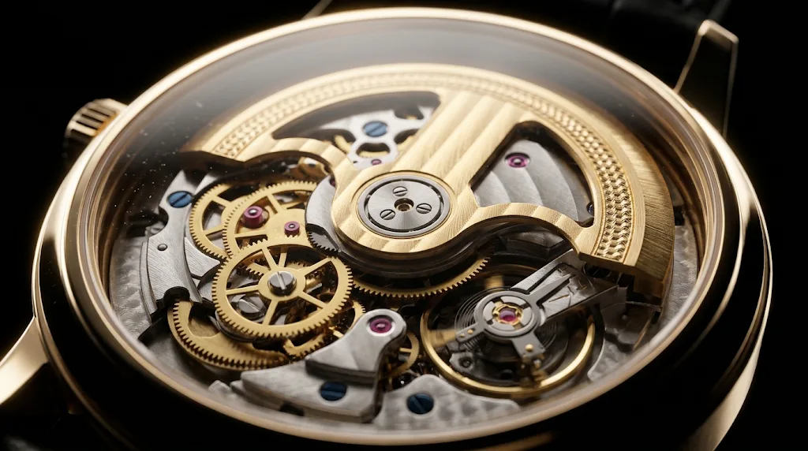

Horlogerie d'exception
TimeShop
L'art de mesurer le temps, de l'atelier à votre poignet.
Faites défiler
Le savoir-faire
Le mouvement mécanique, révélé pièce par pièce
01
Le cadran
Chaque index est posé à la main.

02
Le mouvement
Plus de 200 pièces en parfaite harmonie.
03
Le boîtier
Acier poli, finitions miroir.
04
Au poignet
L'élégance au quotidien.
Voir la collection- Livraison offerteAssurée, sous 48 h
- Garantie 2 ansAuthenticité certifiée
- Retour 30 joursGratuit et sans question
- Paiement sécuriséDonnées chiffrées
La collection
Catalogue indisponible
Aucune montre trouvée
Essayez un autre mot-clé ou une autre maison.